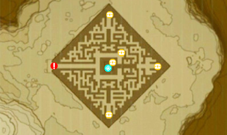

悬崖上的试炼是塞尔达传说中的42个神社任务之一：荒野之息。 完成这个任务揭示了在Hebra地区隐藏的Qaza Tokki神社。
要开始这个神社的任务，可以到北洛班山(Tabantha)雪域东北的北洛美迷宫（North Lomei Labyrint）。
- 进入北洛美迷宫，并继续，直到你看到关闭门后的神社。
- 在你的左边，会有很多的枯萎的东西覆盖你的路。
最好的方法是你爬到左边的墙壁。 在您尝试这样做之前，请先保存，以防万一你掉下里。你只需爬上足够高的位置，释放，然后滑落到安全无人的地面。 无论你选择哪种方式来摆脱精华，当你做的时候，不要错过机会去去除它，通过杀死在你所在的东部的大眼睛。 当你杀死眼睛时，精华将完全消失。 现在你继续向前
- 返回你进入迷宫的阶梯（供参考），直接向北转。
- 沿着这个方向继续行进，直到你到达一条岔路。
- 在你面前和右边的通道将是死胡同。左转，并在这条路上继续。
- 你会来到一个关头。
- 向右（左边将是一个死胡同），右转。
- 继续通道向下，直到你第二次岔路那么右转（第一个右边将是一个死胡同）。
- 左转，然后立即右转。
- 让你的下一个权利，然后下一个左边。
- 第二个右转（再次，第一个右转将是一个死胡同）
- 在一些破桶中，左边会有一个银色的宝箱。小心，因为它是一个从地面跳跃的生物，如果你试图打开宝箱。
- 假的宝箱的左边，直行(东）。
- 会有一堵墙阻挡你，所以只要绕过它，继续直行（东）。
- 当你到达走廊的尽头，左转，你会看到远处有灯柱。这是迷宫的最北部地区。
- 跑向三个灯柱并点亮他们，两者之间会有一个宝箱。
- 从里面拿一个银卢比，然后往下走。
- 在你前面的方向，会有一个灯柱。
- 跑向灯柱。
- 当您到达时，您可以选择向右或向左。请向左（东）。
- 沿着走廊走下去道路不会一时改变，所以遵循它（这将是一个右边，左边，右边和右边）。
- 你会来到一个直线或右转的时刻。直行（朝南！），继续沿着走廊走去。
- 您将在走廊尽头看到右边的两个灯柱。
- 他们之间是一个梯子。爬上它
- 一旦你到达顶部，一直向前直到你能到达你左边的楼梯。
- 走上楼梯直到你到达一个大房间。看下去，那里就是！从Qaza Tokki神社滑下来得到灵魂球。
- 不要急着离开,这里另外有一些珍贵的珍宝。爬上迷宫，并在屋顶上找到一个装有钻石的宝箱，在屋顶上方。在迷宫里，你可以找到一个银币，一个金币，一个Edge of Duality，一个冰箭x5。

您将收到一套野蛮护甲作为完成迷宫的奖励：野蛮人盔甲，野蛮护甲，野蛮人腿包裹。
{kind=link}